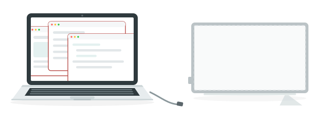
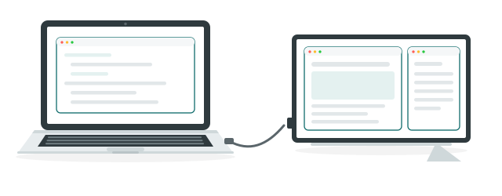

接一台触摸屏，就意味着你至少有两块屏幕。出问题的不只是触摸：哪块屏显示什么、每次插拔之后窗口跑到哪里去。TouchRotator 把这一整套都放进菜单栏的一个图标里。
直接读取面板的 USB 信号（HID 数字化仪），把手指的动作变成这些操作。条件允许时会以独占方式接管面板，因此不受 macOS「这次触摸算哪块屏的鼠标」这一映射的影响。触控板与鼠标一切照旧。
与显示区域之间的细微偏差，可以用四点校准对齐。
把面板旋转 90° 后，macOS 仍按旋转前的方向接收坐标。TouchRotator 会先把读到的坐标旋转再交给系统，因此竖置的面板也和平常一样。旋转方向会自动跟随 macOS 的显示器设置。
如果一直横着用，这项设置用不到。⌥⌘R 可随时开关。
分辨率、亮度、镜像、旋转，都能在菜单栏的弹窗里更改。每台显示器一张卡片，接几台就有几张。屏幕的排列顺序也可以在 设置 → 显示器 中拖动调整。
点显示器名称，就会展开这张卡片。
 100%9:41
TouchRotator
● 校正已开启
100%9:41
TouchRotator
● 校正已开启
拔掉显示器后，原本在上面的窗口会被挤到内建显示器，重新接上也不会回去。屏幕一多，这几乎每天都会发生。TouchRotator 会记住布局，在显示器接回来时把窗口放回原处。
摆放好之后，点一次记住当前布局。之后会自动恢复，也可以随时用恢复布局调出。
拔掉显示器窗口被挤到内建显示器上

外接显示器Mac 本机
↓ 重新接上后自动
恢复布局回到原来的屏幕、原来的大小

接到 Mac 上的触摸屏，原样只能点击。
触摸落到了别的屏幕上，或者面板竖置后坐标发生了偏移。
向上变成向下，向右变成向左。面板的方向尚未被学习。
不必再一个个把窗口摆回原处。
1,980 日元 一次买断，含税
购买流程由销售代理（merchant of record）作为卖方处理，收据也由其发送。
尚未开始销售。在此之前可免费使用。
| 操作系统 | macOS 13 (Ventura) 或更高版本 |
|---|---|
| 机型 | Apple silicon 与 Intel 均可 |
| 触摸屏 | USB 连接的 HID 数字化仪。横置或竖置（90° / 270°）都可以 |
| 所需权限 | 辅助功能与输入监控。这是 macOS 的要求，首次启动时会有引导 |
| 语言 | 日本语 · English · 简体中文 |
| 签名 | 已使用 Apple Developer ID 签名，并通过 Apple 公证 |
使用问题、故障反馈与退款申请，请联系 info@tsubomi.jp。我们以日语或英语回复。